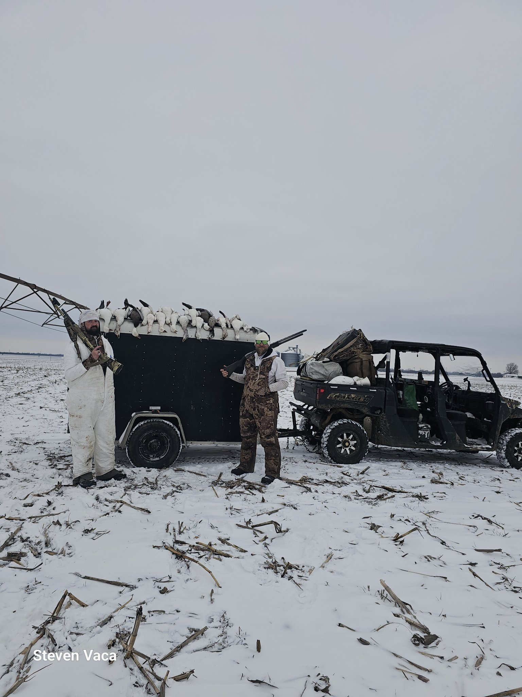
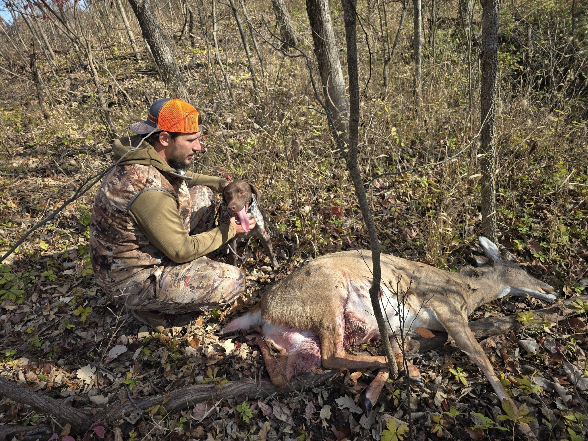
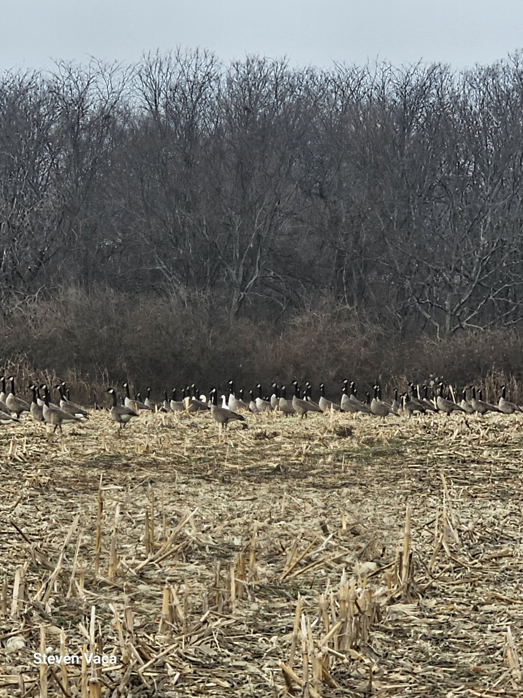
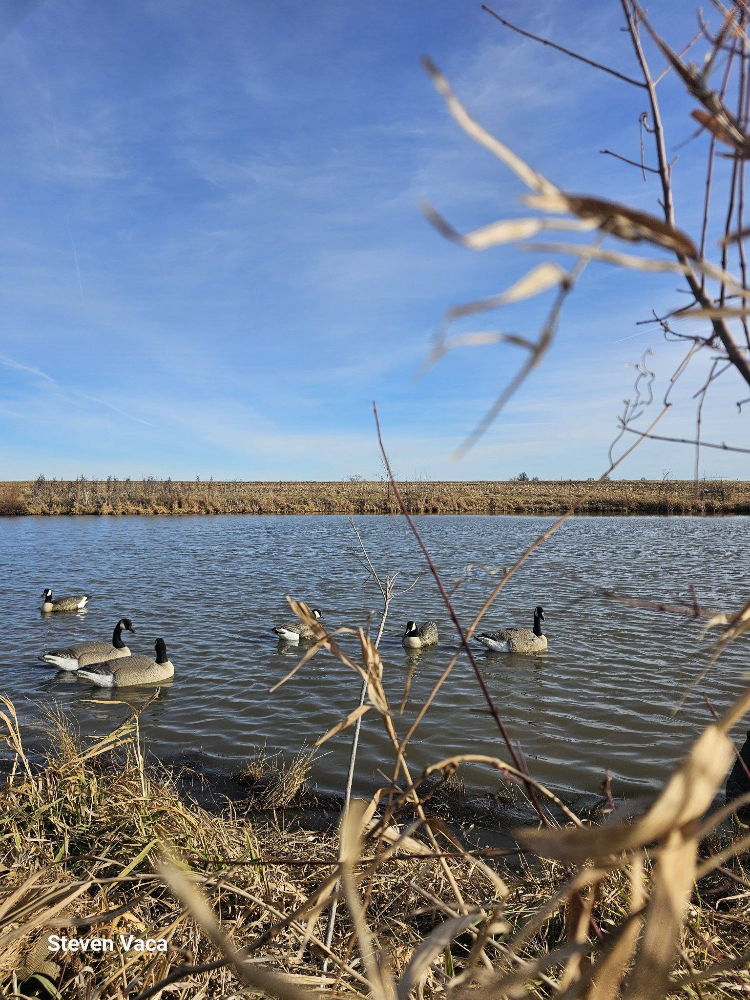

Serious hunting. Honest ground.
Native Prairie Outfitters LLC has guided waterfowl, turkey, archery deer, and dove hunts since 2022 — on roughly 2,000 leased acres in Cass County, Missouri, plus ground in Kansas and Iowa. Built around ADA accessibility, welcoming hunters of all abilities.
What we hunt
Waterfowl
Ducks and geese over managed spreads on Missouri wetlands and prairie potholes.
Turkey
Spring gobbler hunts on proven roost ground across our leased acres.
Archery deer
Archery-only whitetail hunts — stands and blinds set on travel corridors and food sources.
Dove
Early-season dove fields — fast action and a great first hunt.
Built for every hunter
Our setups are designed around ADA accessibility — from blind placement to getting you in and out of the field comfortably. Out-of-state hunters are welcome; we'll help you sort licenses and logistics.
From the field




Photos by Steven Vaca.